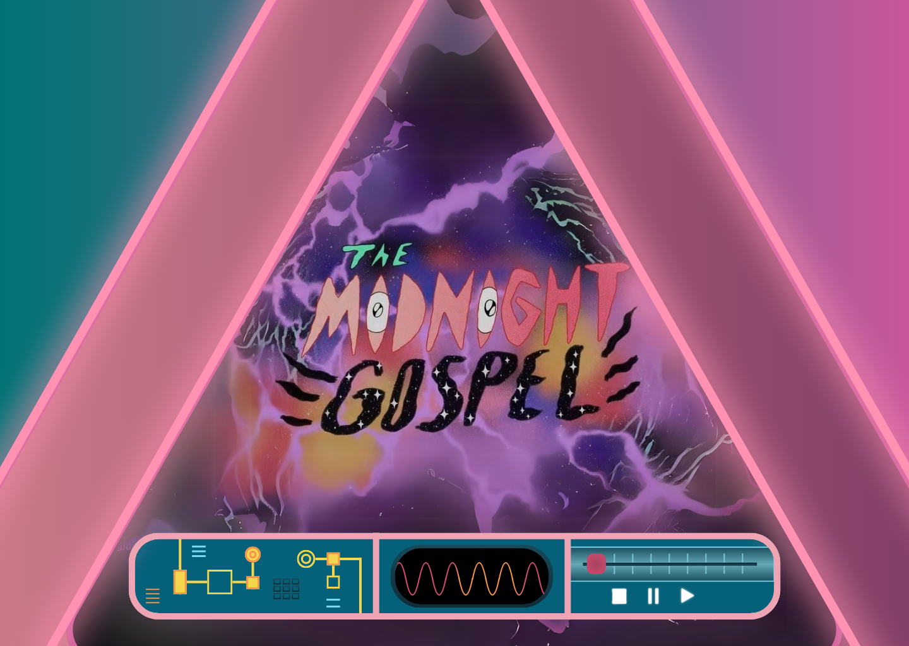

THE MIDNIGHT GOSPEL
DUNCAN TRUSSELL Y PENDELTON WARD
DUNCAN TRUSSELL
Comediante, podcaster y filósofo contemporáneo, Duncan es la mente detrás del Duncan Trussell Family Hour, un pódcast donde explora temas profundos como la muerte, la espiritualidad, el ego y la conciencia. Su voz y pensamiento dieron vida a Clancy, el protagonista de The Midnight Gospel.
PENDELTON WARD
Creador de la aclamada serie Adventure Time, Pendleton es un animador y guionista conocido por construir mundos visuales intensamente creativos y emotivos. Su colaboración con Trussell permitió transformar conversaciones filosóficas reales en un universo animado lleno de color, caos y sentido existencial.